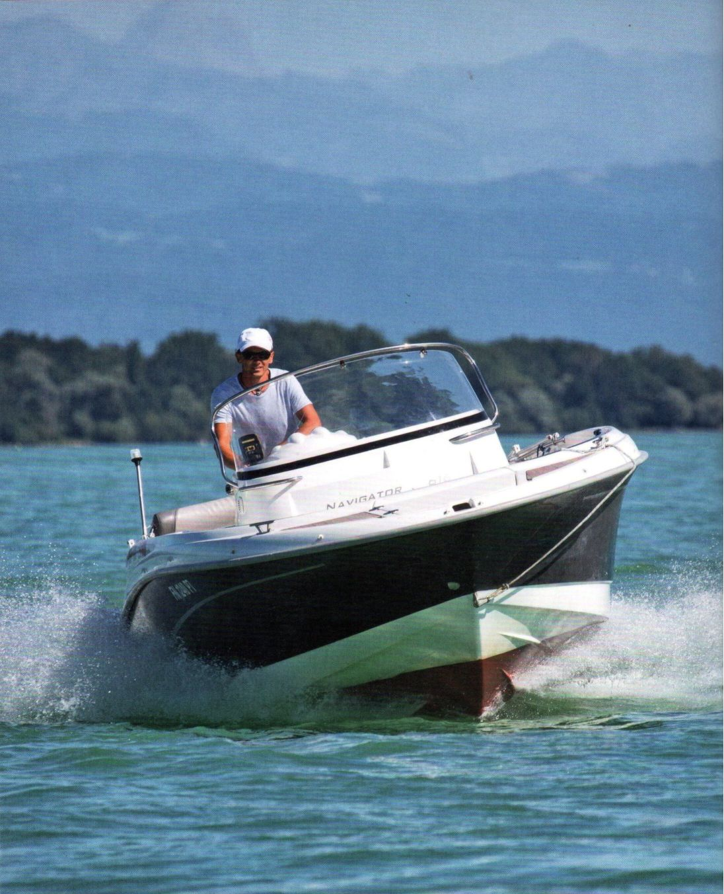
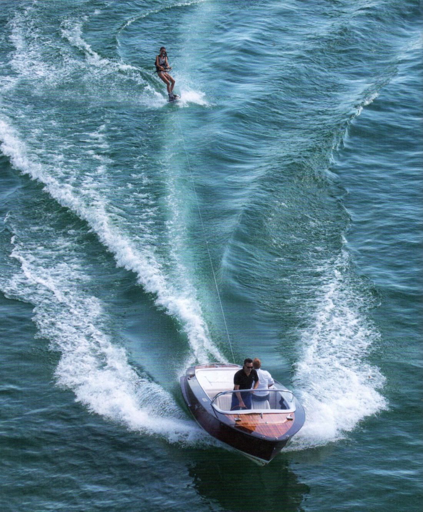
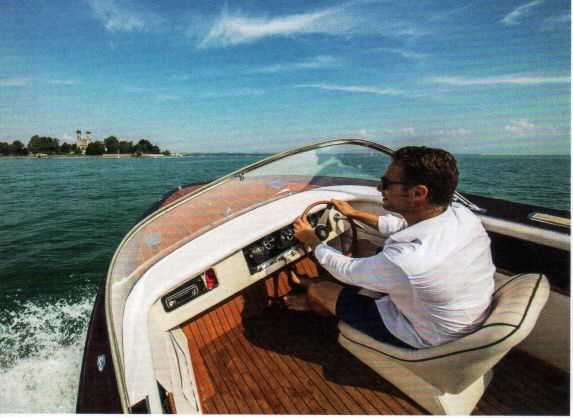
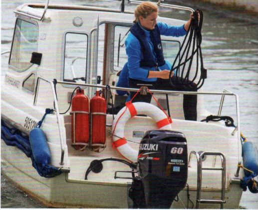

Овершмидт — Гливе
Права на управление спортивным судном для внутренних водных путей
С официальными экзаменационными вопросами
DELIUS KLASING

Хайнц Овершмидт
Раман Гливе
Права на управление спортивным моторным судном на внутренних водных путях
С официальными экзаменационными вопросами и ответами
Издательство Delius Klasing

Моторный водный спорт, без сомнения, занимает важное место среди популярных видов досуга. Независимо от того, отправляетесь ли вы на романтическую прогулку выходного дня на надувной лодке с мотором или в дальнее путешествие на комфортабельной моторной яхте — всех объединяет возможность непосредственно наслаждаться природой. Моторный водный спорт не ограничен возрастом — при условии, что вам исполнилось 16 лет.
Разумеется, на воде вы не одни. Поэтому существуют различные правила, регулирующие взаимодействие прогулочных и коммерческих судов. Знать их совершенно необходимо. Кроме того, моторная лодка — это дорогое и технически сложное спортивное средство, управление которым требует специальных знаний и навыков. Поэтому наличие официального «подтверждения квалификации» является обязательным.
Подтверждением необходимых навыков служит «официальное удостоверение судоводителя спортивного судна с областью действия на внутренних водных путях с механическим двигателем». Оно обязательно на всех внутренних водных путях Германии
и признаётся в большинстве стран, где существуют аналогичные удостоверения. Для некоторых немногих стран требуется дополнительный «Международный сертификат для операторов прогулочных и спортивных судов» Европейского союза. Он выдаётся при предъявлении удостоверения судоводителя спортивного судна.
С 2012 года введены новые правила проведения экзамена. Ранее к каждому вопросу существовал образцовый ответ, который нужно было воспроизвести на письменном экзамене для получения необходимого количества баллов. Теперь используется система single-choice. К каждому вопросу предлагаются четыре варианта ответа: три неверных и один правильный. Сам экзамен не стал сложнее, просто изменился его формат. В приложении приведён официальный каталог вопросов и ответов. Правильный ответ отмечен зелёной галочкой.
Учебник, который вы держите в руках, уже помог бесчисленному количеству судоводителей моторных лодок успешно подготовиться к экзамену на получение удостоверения.
И даже после сдачи экзамена он служил и продолжает служить многим надёжным спутником и разумным советчиком в практическом плавании. В книге, разумеется, содержится весь экзаменационный материал для получения удостоверения судоводителя спортивного судна для внутренних водных путей. Но этим дело не ограничивается. В отличие от многих других учебников, это издание не ограничивается исключительно теми знаниями, которые необходимы только для экзамена. Оно предлагает больше практических знаний. Ведь те фрагментарные знания, которые дают на курсах подготовки, далеко не всегда достаточны для того, чтобы действительно уверенно и безопасно управлять моторной лодкой. Поэтому здесь вы узнаете и многое из того, на что на курсах просто не хватает времени, но что необходимо знать и уметь, если после успешной сдачи экзамена вы захотите выйти на воду на собственной лодке.
И теперь — успехов!
Авторы

